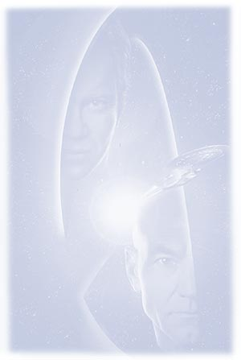
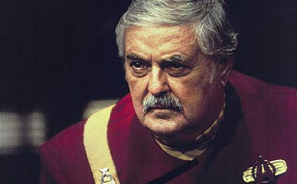
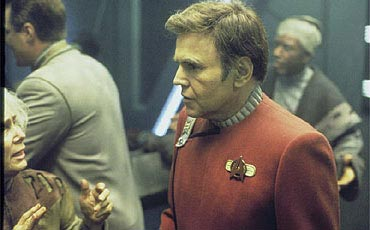
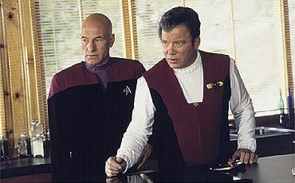
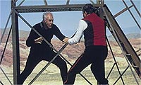
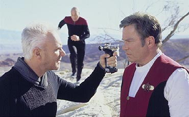
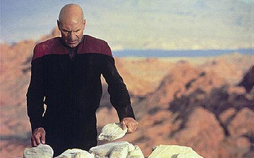

Quando, em 1991, as
cortinas se fecharam, as luzes se acenderam e os crditos comearam
a subir, aps a Enterprise sumir entre as estrelas levando sua
lendria tripulao, os fs pensaram: " isso a. Foi
muito bom, mas acabou. Agora a Srie Clssica deixa o
status de programa de entretenimento e se converte em uma
lenda".
Mas no foi bem assim que aconteceu. Em 1994, a Nova Gerao
estava pronta para assumir seu posto e levar a srie de filmes
adiante, mas seu produtor-executivo, Rick Berman, achou que "Jornada
nas Estrelas VI - A Terra Desconhecida" no havia sido
uma despedida suficiente para nossos heris, e que, para o novo
filme, seria preciso dar um tom de "passagem da tocha".
Com a misso de realizar o encontro das duas tripulaes na
telona, Rick Berman tratou de atacar em dois fronts diferentes. Em
um deles, desenvolvia uma histria com Maurice Hurley. Em outro,
uma outra, com Ronald D. Moore e Brannon Braga. A verso que
acabou avanando melhor foi a da dupla, de modo que o conceito
inicial de Hurley acabou logo descartado.

Ao escrever o roteiro,
Brannon e Ron perceberam que seria extremamente complicado dar um
papel relevante a todos os personagens das duas sries. Duas
medidas foram tomadas para tentar solucionar a questo: a
primeira, que cumpria a dupla funo de tambm deixar claro que
aquele filme era de fato da Nova Gerao, era limitar a
participao dos personagens clssicos ( exceo de Kirk)
aos 15 primeiros minutos. A segunda era dispensar o quarteto
Uhura, Scotty, Chekov e Sulu, ficando apenas com o trio principal,
Kirk, Spock e McCoy.
Foi assim que a histria surgiu --mas Rick Berman e seus
comandados esqueceram que Leonard Nimoy e DeForest Kelley j no
eram mais atores inexperientes. Nimoy, que tambm foi convidado
para dirigir o filme, pulou fora, depois de ver que Spock no era
realmente importante e de descobrir que Berman no deixaria que
ele pedisse mudanas no roteiro --que de fato estava precisando.
Kelley tambm no se sentiu bem com o filme, como ele mesmo
relatou em entrevista revista "Star Trek
Communicator" de julho/agosto de 1995. "Eu decidi que se
eu precisava sair, eue queria sair com Jornada VI em vez de
estar apenas no incio desse filme como um bonequinho",
disse. "E Leonard tambm se sentiu assim."
O ator no era pretensioso, mas no queria ver seu personagem
usado apenas como um registro de que estava l. "Eu no
esperava tremendos papis porque voc no pode lidar com tanta
gente em duas horas. Eu certamente que seramos utilizados
durante o filme todo. Esse no era o caso de jeito nenhum."

Como Nimoy e Kelley
pularam fora, Berman tratou logo de convocar James Doohan e Walter
Koenig para substitu-los. Acostumados a pequenas pontas, mesmo
nos filmes da srie original, os dois aceitaram sem grandes
problemas, apesar de seus desafetos com o colega William Shatner.

Alis, trazer Shatner
para o filme no foi uma coisa das mais difceis. Oferecer uma
cena de morte a um ator sempre um truque dos mais baixos para
deix-lo interessado. Ainda mais no caso do capito James T.
Kirk, cuja carreira no cinema parecia encerrada em 1991. Com a viso
enviesada pela vontade de voltar a interpretar o velho Jim em uma
ltima aventura, Shatner nem se preocupou com a morte que lhe
ofereceram.
"Eu no vi sentido naquilo", disse Kelley. "Eu
nunca vi nenhuma razo para matarem Kirk de qualquer modo."
Apesar disso, nas entrelinhas, o ator sugeriu o que isso
significava para ele e seus colegas. "Ningum nunca tentaria
fazer um filme com a Jornada nas Estrelas original sem o
capito Kirk." Para Magro, a Srie Clssica estava
mesmo "morta, Jim".
Muitos dos fs se revoltaram com a morte do cone mximo de seu
seriado favorito --principalmente do modo que foi executada, com o
capito perdendo a vida ao cair de uma ponte. Uma morte to
trivial e evitvel que parecia estar ali tirada da cartola de ltima
hora, sem ser fruto de uma grande reflexo. E exatamente o que
ela era.

Depois que o filme foi
concludo, a Paramount realizou uma exibio-teste e descobriu
que o final estava desagradando a 99% do pblico. Antecipando uma
catstrofe, o estdio pediu que Rick Berman inventasse um outro
final, "melhorando" o clmax da histria. Com o relgio
tiquetaqueando e a data de estria marcada, o final que todos
conhecemos foi o melhor que o trio Berman, Braga e Moore conseguiu
criar.
E, por incrvel que parea, de fato muito melhor do que a
verso original. Pois , acredite se quiser, mas a primeira
morte de Kirk conseguiu ser muito mais estpida do que a
primeira. Lendo a novelizao do filme, feita de forma brilhante
por J.M. Dillard, nem parecia que o final original (que foi
reproduzido no livro) era to ruim --e essa foi a impresso que
ficou entre os fs durante muito tempo.
Nos ltimos anos, alguns fs mais "quentes"
conseguiram copiar "workprints" (verses preliminares
dos filmes usadas como referncia para apreciao do estdio
ou para futura edio) antigos, que continham muitas cenas
perdidas de "Generations". Entre elas estava a
famosa descida suborbital de pra-quedas feita por Kirk, enquanto
Scotty e Chekov aguardavam sua descida e algumas esticadas de
cenas aqui e ali durante a poro referente Nova Gerao.
Mas, claro, o que todos queriam ver era a morte original de Kirk.
Teria finalmente o capito sua honra e integridade restaurada por
uma morte mais adequada? Doce iluso. Os cinco minutos que
antecedem a baixa de Jim na primeira verso so um show de
trapalhadas. No acredita?
Agora chegou a hora de conhec-la. O Trek Brasilis est
disponibilizando o que possivelmente a melhor verso
digitalizada atualmente existente desta sequncia, pois vem de um
workprint em que os efeitos especiais j esto incorporados, e h
at msica provisria nas cenas, retirada de outros filmes.
Antes de continuar a ler, se voc quer ver por si mesmo o final,
sem saber antes do que se trata, melhor comear o download.
Use um programa que permita retomada de download em caso de
desconexo, pois o arquivo tem 17,1 Mb, para 7 min 37 s de vdeo.
O formato, como sempre AVI (Divx).
|

Download
Formato:
AVI (Divx)
Durao: 7 min 37 s
Tamanho: 17.1 Mb
Resoluo: 304x128
|
A Cena
Kirk acaba de voltar com Picard do Nexus para evitar que Soran
destrua o sistema Veridian. Kirk confronta o vilo em uma das
pontes do complexo, enquanto Picard se encaminha para a
plataforma de lanamento. Enquanto Kirk e Soran travam uma
troca interminvel de socos e pontaps, Picard tenta desativar
o mssil. Por total incompetncia, o capito ativa,
involuntariamente, o despositivo de camuflagem da plataforma. O
painel some diante de seus olhos e no h nada que ele possa
fazer.
Enquanto isso, Kirk quase atirado de um penhasco, mas
consegue se segurar a uma corda. Ele volta at Soran sem que o
vilo o perceba e coloca o inimigo a nocaute. Picard grita para
ele: "Pegue o controle remoto na cintura de Soran e
desative o dispositivo de camuflagem." o que Kirk faz.
Picard volta a trabalhar na plataforma e Kirk dispara uma frase
para ficar na histria: "O sculo 24 no to duro
afinal".
Ele mal completa a frase quando Soran, que at ento estava
desacordado, volta conscincia e dispara uma arma nas costas
do capito, que cai prostrado no cho. Picard consegue alterar
o rumo do mssil, que acaba caindo no prprio planeta. Tendo
seu plano frustrado, Soran parte, desarmado, na direo de
Picard. Ao ver o Kirk morto, Picard mata o vilo sem d nem
piedade, friamente. Kirk troca suas ltimas palavras com
Picard, para depois ser enterrado por seu sucessor no comando
dos filmes de Jornada. isso.
Com um final desses, no toa que o pblico-teste ficou
decepcionado. A verso que foi ao cinema, apesar de continuar
tola e sem sentido, pelo menos no destri os personagens como
a verso original. Picard incompetente, incapaz de desprogramar
um mssil? Kirk fazendo uma piadinha besta antes de ser morto
pelas costas? Picard matando friamente um inimigo desarmado?
Quem escreveu isso seguramente estava com problemas.

E estava mesmo. A
mesma dupla que escreveu "Generations" tambm
trabalhou freneticamente no episdio final de A Nova Gerao,
concludo menos de um ano antes do filme estrear. Com a presso
do estdio para o lanamento do filme e a dificuldade de
equacionar o fim de uma srie e a produo de um
longa-metragem simultaneamente acabou produzindo este resultado.
Mesmo assim, "Generations" continua sendo
lembrado pelos fs como um filme atraente e divertido do
franchise, apesar da triste morte do smbolo mximo da srie
original. E estarmos aqui, agora, 35 anos depois que tudo comeou,
falando sobre isso a prova de que preciso muito mais que
uma ponte ou um tiro nas costas para matar James T. Kirk. Ou,
como diria McCoy, "ele sempre estar vivo enquanto nos
lembrarmos dele".
